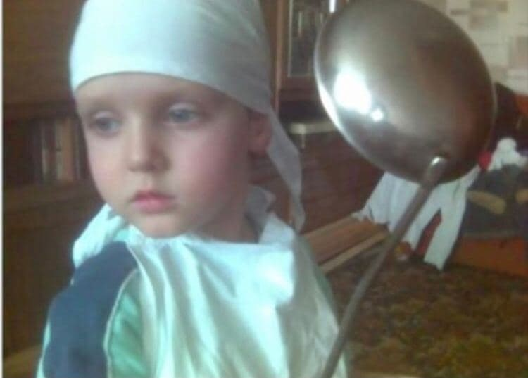

Я з дитинства дуже активна людина. Я займався карате, футболом- довгий час, також боксом, ММА, тайським боксом, плаванням, настільним тенісом. Я ходив в акторську школу. Но головні речі в моєму житті це-спорт, гумор, сцена, сім'я , друзі і звичайно ж любов готувати.
